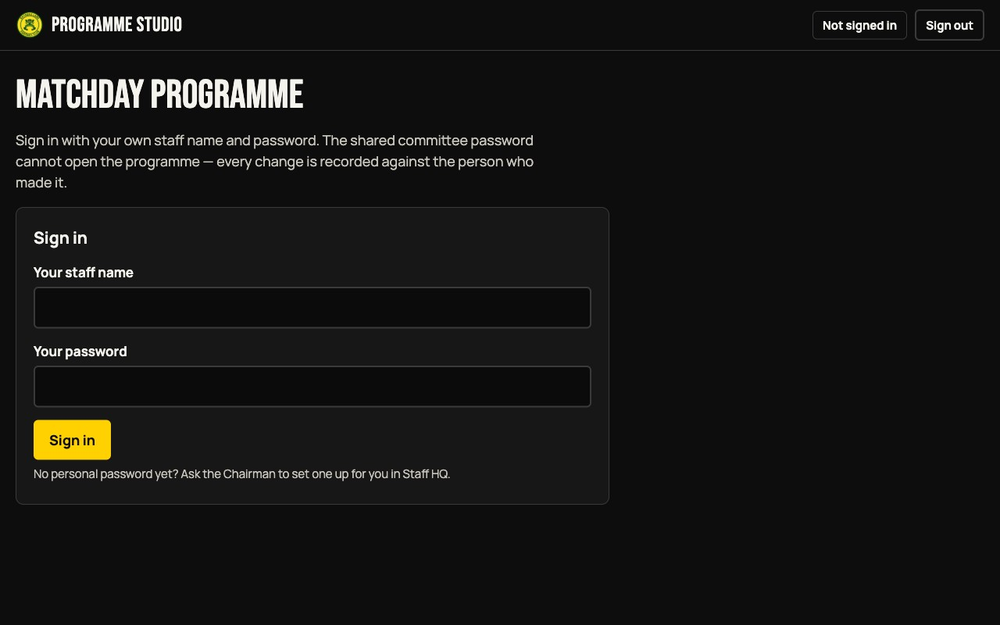
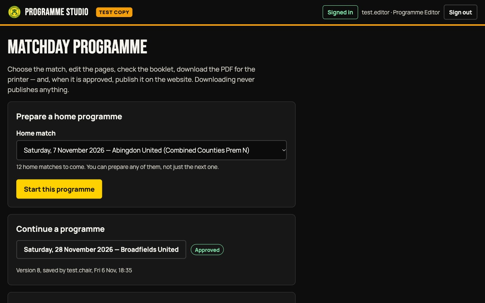
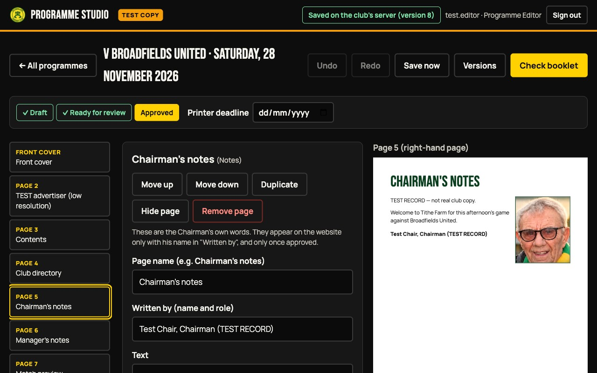
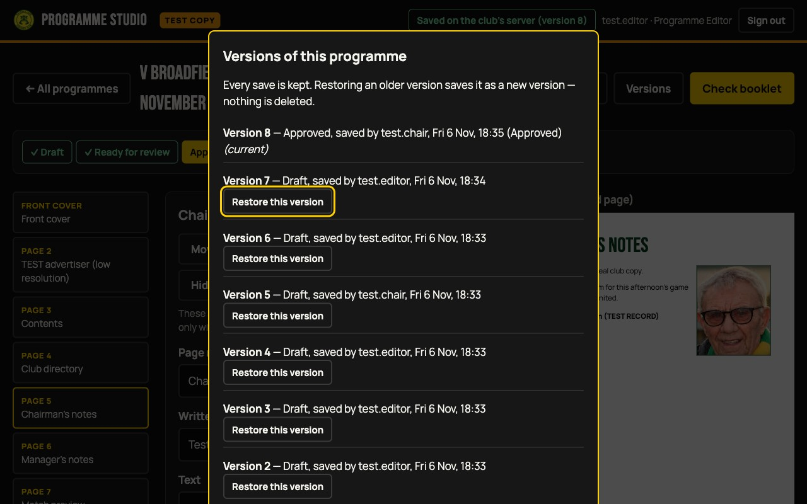
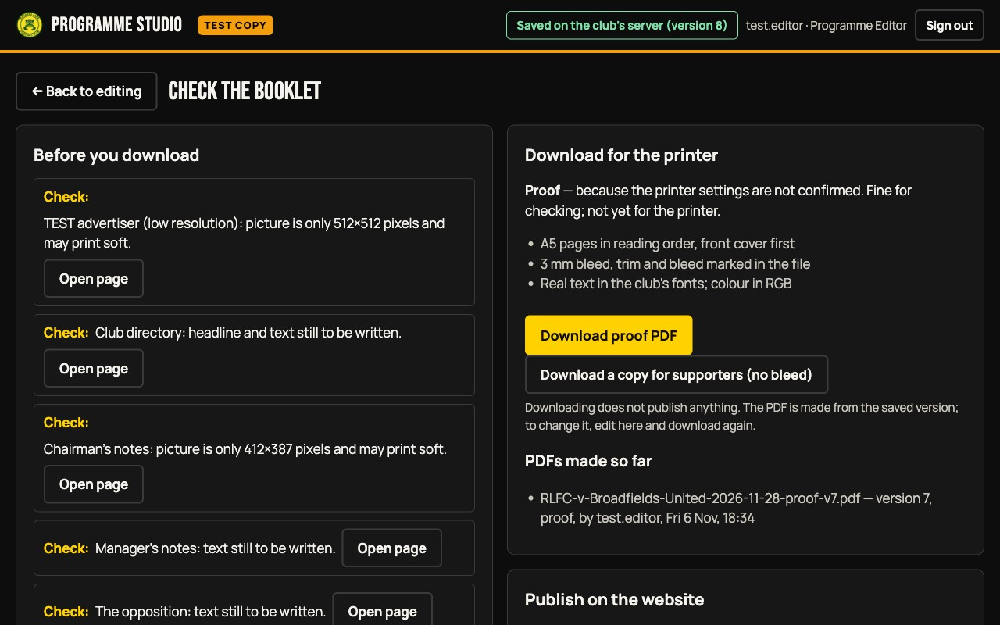
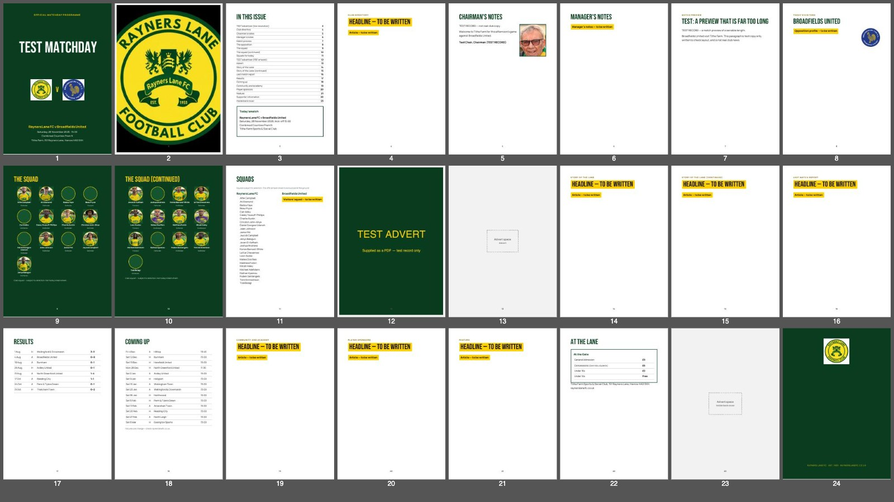

Making the matchday programme
A short guide for committee members. Everything happens in Programme Studio; the old Programme tab and its "Print Edition" button are no longer the way to make the printed booklet.
1. Sign in with your own name and password
The shared committee password does not open the Studio: every change is recorded against the person who made it. If you have no personal password yet, ask the Chairman to set one up for you in Staff HQ.

2. Choose the match — or carry on with one you started
Pick any upcoming home match, not just the next one. Programmes already started are listed with who saved them last and whether they are a draft, ready for review or approved.

3. Edit the pages
- Choose a page on the left. Type in the boxes in the middle. The page on the right shows exactly how it will print.
- Leave a blank line between paragraphs. Anything not yet written prints as a yellow "to be written" mark, so a proof can never be mistaken for the final copy.
- Use Move up and Move down to reorder pages; the contents and page numbers update themselves. Undo takes back the last change.
- Add a photograph from your phone or computer. If it is too small to print well, the Studio says so. iPhone "HEIC" photos need converting first — the Studio explains how.
- Adverts can be a picture or a PDF from the advertiser. With a PDF, the Studio asks which page is the advert and warns if it is the wrong shape.

4. Two people editing at once
If someone else saves the same programme while you are working, the Studio stops and asks: Use their version or Keep my changes. Nothing is overwritten without you choosing, and every saved version is kept under Versions, where any earlier one can be restored.

5. Check the booklet, then download
Press Check booklet. The Studio lists anything to sort out — "Must fix" first — each with an Open page button that takes you straight there: a page count that is not a multiple of four, text that runs off a page, unsigned Chairman's notes, empty advert spaces, pictures too small to print well, or a match that has been postponed.

The PDF is A5, pages in reading order with the front cover first, real text in the club's fonts, and 3 mm of bleed marked for the printer. It is labelled a proof until the version is approved and the printer settings have been confirmed with the printer. The editable programme stays in the Studio: to change something, edit there and download again — every PDF made is listed with its version number.

6. Approve and publish online
When the pages are right, press Mark ready for review. Someone with publishing rights (the Chairman, or anyone the Chairman has given that right to) checks it and presses Approve this version. Approving does not publish it. Then choose when it should appear on the website — now, at a time you choose, or on matchday morning — and press Publish online. The Studio only says "Published" once it has checked the website is showing it. Any change after approval sends it back for review; a change after publication goes out as a labelled correction, and earlier versions stay as they were.
The squad
A programme keeps the squad as it was when the programme was started. If the club squad changes afterwards, the Studio shows Squad updates available with who joined, who left and whose photo changed — you choose whether to use the update. A PDF already made is never changed.
Printer handoff checklist
- The printer settings in the Studio say confirmed — size, bleed, and that the printer accepts RGB colour. If the printer requires CMYK or PDF/X, the Studio can only make a proof: the printer or a designer must convert it, and they should send a proof back.
- "Check booklet" shows no "Must fix" items.
- The version is approved, and the button says Download printer PDF (not "proof").
- The page count is a multiple of four, and you have told the printer how many pages, the size (A5), and how many copies.
- The squad pages say "Club squad — subject to selection": the official team sheet is announced at the ground, never printed in advance.
- Email the PDF with the file name the Studio gave it (it includes the opponent, date and version number), and keep the printer's deadline in the Studio up to date.
- If something changes after the PDF has gone, make the change, approve it, and send the new version — tell the printer the new version number.